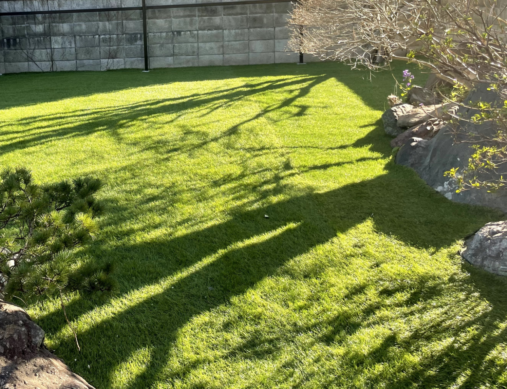
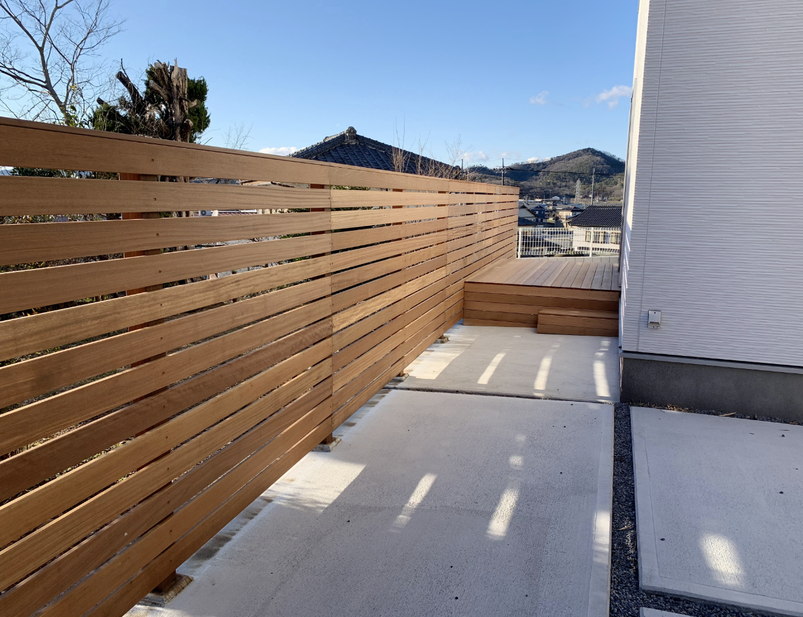
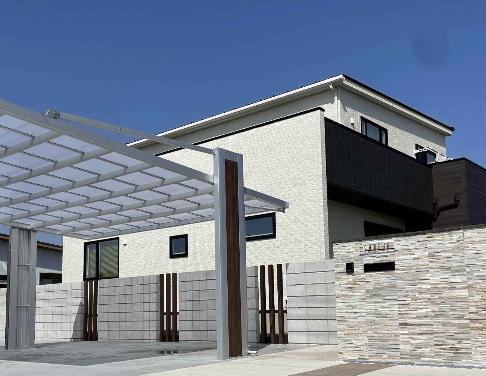

サービス
造園
理想の庭園を創造し、
感動と心の安らぎを提供する。

造園について
庭園の完成時には、お客様に感動して頂き、住んでは、心が落ち着く、そんな庭園を創造するために、一級造園技能士が、デザイン、設計、石工、植栽管理まで一貫したトータルエクステリアサービスを提供します。
外構工事
コピーが入ります。コピーが入ります。コピーが入ります。コピーが入ります。

外構工事について
テキストが入ります。テキストが入ります。テキストが入ります。テキストが入ります。テキストが入ります。テキストが入ります。テキストが入ります。テキストが入ります。テキストが入ります。テキストが入ります。テキストが入ります。テキストが入ります。テキストが入ります。テキストが入ります。テキストが入ります。テキストが入ります。テキストが入ります。テキストが入ります。
太陽光
コピーが入ります。コピーが入ります。コピーが入ります。コピーが入ります。

太陽光について
テキストが入ります。テキストが入ります。テキストが入ります。テキストが入ります。テキストが入ります。テキストが入ります。テキストが入ります。テキストが入ります。テキストが入ります。テキストが入ります。テキストが入ります。テキストが入ります。テキストが入ります。テキストが入ります。テキストが入ります。テキストが入ります。テキストが入ります。テキストが入ります。